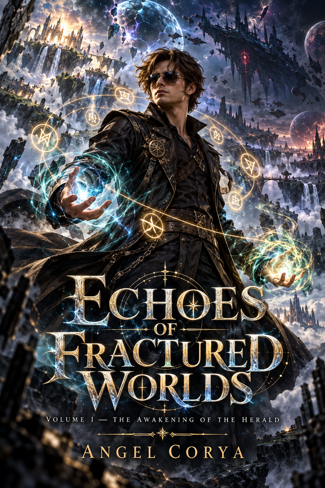

VOLUME I
An ordinary life breaks open. Mark crosses his first worlds, learns that every power has a history and discovers that the enemy knows more about him than he knows about himself.
ORIGIN • LIVING FOREST • FIRST RESONANCES01 / THE NOVEL
Before Echoes becomes a world you can play, it is a world you have to believe in.
Mark lives an ordinary life until a primordial talisman tears open the boundary between worlds. What begins as survival becomes a journey across fractured dimensions, ancient powers and a conflict that forces him to decide what power is actually for.
02 / READ THE OPENING
Read an abridged prologue and the complete first chapter. Begin in Mark's ordinary world, follow the first fracture and discover why the Living Forest is only the beginning.

03 / ONE STORY • THREE VOLUMES
The complete story is structured as a three-volume saga. Each volume deepens the mystery of the fractured worlds while moving Mark closer to the truth behind the Heralds, the runes and the cost of resonance.
An ordinary life breaks open. Mark crosses his first worlds, learns that every power has a history and discovers that the enemy knows more about him than he knows about himself.
ORIGIN • LIVING FOREST • FIRST RESONANCESThe conflict stops being distant. Alliances, old failures and the truth of the Heralds reshape what Mark believes he is fighting for.
COVENANTS • CORRUPTION • CONSEQUENCESEverything returns to the beginning. Power, sacrifice and the fate of entire worlds converge in a final decision that cannot be undone.
TRUTH • SACRIFICE • RESONANCE04 / ENTER THE LORE
The novel is the heart of Echoes. Around it lives an archive of worlds, runes, people and recovered records designed to reward readers who want to look beneath the surface.
Mark is pulled into a conflict spanning dimensions. A primordial talisman and nine resonances force him to confront a question greater than power: what gives anyone the right to decide the fate of another world?
INTERACTIVE ARCHIVE
Explore the Nine Rune Codex, recovered dimensional records and personnel files. The archive reveals enough to invite questions without spoiling the journey.
The novel is the narrative source. Music, artwork and the game expand the same mythology without replacing it.
Every rune carries the identity of a world, a power and a piece of the larger mystery.
Each dimension has its own visual language, culture, conflict and emotional role in Mark's journey.
05 / SOUNDTRACK
Original music created as an emotional extension of the story — themes for exploration, corruption and the feeling of crossing into somewhere impossible.